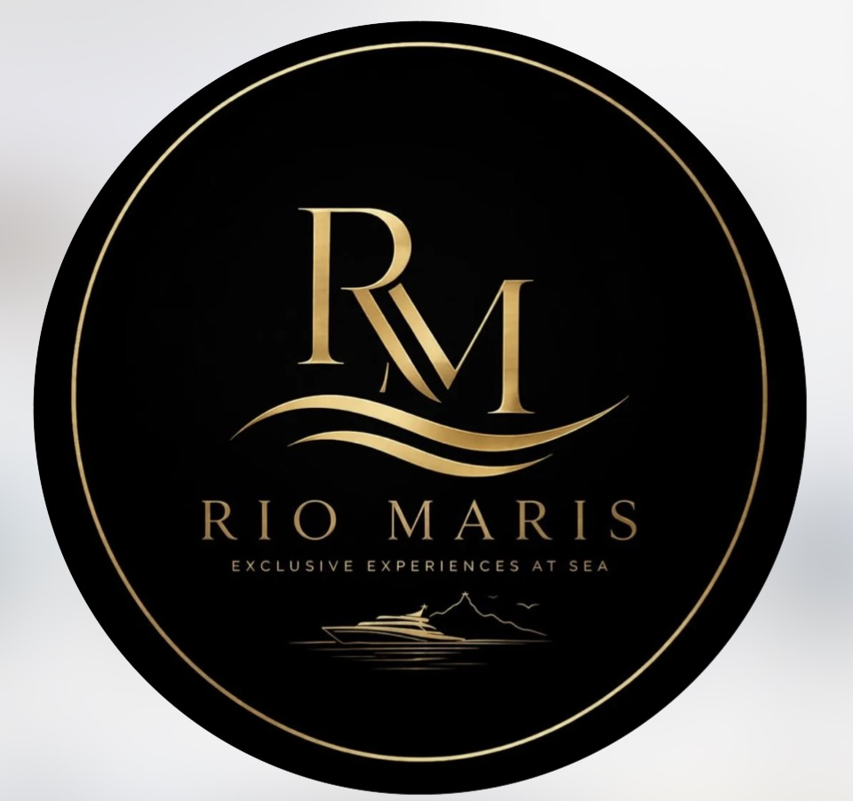

Passeios privativos de lancha e iate com curadoria personalizada: escolhemos a embarcação certa entre mais de 50 opções, para o seu grupo e a sua ocasião.
Entre mais de 50 embarcações, indicamos até 5 opções ideais pro seu grupo.
Marinheiros habilitados, embarcações vistoriadas, negociação transparente do início ao fim.
Português, inglês ou espanhol: resposta rápida no WhatsApp, sempre.
Cada roteiro sai da Marina da Glória e passa pelos pontos mais icônicos da orla. A diferença está no destino final e no motivo da viagem.
Flamengo, Botafogo e parada pra mergulho na Mureta da Urca: o roteiro mais completo pelo melhor preço.
Ver roteiro completo →O roteiro mais reservado da Rio Maris: os principais pontos do Rio com parada pra mergulho na Praia Vermelha.
Ver roteiro completo →O roteiro mais completo: Copacabana, Praia Vermelha e mergulho em mar aberto nas Ilhas Cagarras, nossa experiência mais bem avaliada.
Ver roteiro completo →Não somos donos de uma frota: curamos entre mais de 50 embarcações parceiras para indicar a ideal pro seu grupo. Aqui estão alguns exemplos do padrão que selecionamos.
Vieram sem saber qual barco escolher. A Rio Maris resolveu tudo, e o passeio foi exatamente o que a gente sonhava pra celebrar.
Pagamento internacional facilitado, atendimento em português, inglês e espanhol, e localização estratégica perto de onde você está hospedado.
O valor varia conforme a embarcação, a duração e o roteiro escolhido. Como fazemos curadoria personalizada entre mais de 50 opções, o jeito mais rápido de receber um orçamento certo pro seu grupo é falar com a gente no WhatsApp.
Sim. Trabalhamos só com marinheiros habilitados e embarcações vistoriadas, com negociação transparente do início ao fim e pagamento internacional facilitado para quem vem de fora.
Sim, atendemos em português, inglês e espanhol, com resposta rápida pelo WhatsApp em qualquer um dos três idiomas.
Você não precisa escolher sozinho: conta pra gente o tamanho do grupo e a ocasião, e indicamos até 5 opções ideais entre as mais de 50 embarcações parceiras.
Fale agora com a gente e receba a recomendação ideal pro seu grupo, em minutos.
Falar no WhatsApp